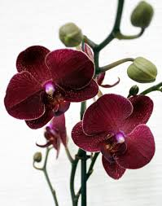
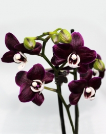

<div class="container">
    <div class="dogl">
        <h1>Догляд за орхідеями в домашніх умовах</h1>
        <div class="video1">
            <iframe width="560" height="315" src="https://www.youtube.com/embed/7pDXz7o8daQ" frameborder="0" allow="accelerometer; autoplay; encrypted-media; gyroscope; picture-in-picture" allowfullscreen></iframe>   
        </div>
        <div class="text">
            Ніжні квіти на тонкому стеблі - орхідеї. На перший погляд здається, що вони потребують ретельного догляду і з ними багато клопотів. Насправді все не так складно, щоб ви переконалися у цьому - основні поради по догляду за орхідеями.
            Ще зовсім недавно не можна було навіть і подумати, що орхідею, квітку - паразита, яка росте на деревах тропічних і субтропічних регіонів, можна вирощувати в домашніх умовах, в нас на Україні. У світі нараховується сто тисяч видів і сортів орхідей, але лише незначна частина пристосована для вирощування в домашніх умовах. 
            Орхідеї відносять до примхливих квітів, хоча, насправді, догляд за орхідеєю легший ніж за іншими кімнатними рослинами. Догляд дуже простий: достатньо обрати орхідею, поставити на постійне місце, поливати не частіше одного разу на тиждень літом, а взимку достатньо раз на два-три тижні, підживляти і вона буде милувати Ваше око своїм цвітом до 6 місяців. Можна сказати, що мінімум догляду - максимум віддачі. Отже можна підібрати цілу колекцію різнокольорових орхідей.
            Як вибрати орхідею? Перш за все вибираємо по кольору квітки і її величині, при наявності одного чи двох квітконосів та їх висотою. Наступне: пильно оглядаємо листя, щоб не було коричневих плям, плісняви, гнилі на ґрунті, листках і корінцях, дивимося чи немає комашок між листками і в грунті. Горщик в якому росте орхідея, має бути прозорий і без тріщин. Успіх вирощування орхідей залежить від вибору здорової рослини і правильного догляду.
            Догляд за орхідеями більше схожий на мистецтво ніж на науку. Звичайно, можна легко отримати конкретні вказівки, щодо правильного догляду за різними видами орхідей. Наприклад, Cattaleya необхідно середнє яскраве освітлення, висока вологість повітря, а Miltonia - не любить різкої зміни температури, Phalaenopsis - потребує високої вологості повітря, і стабільної температури.Тим не менше, є багато можливостей створити ідеальні умови для власної орхідеї. Всі фактори, такі як грунт, вода, світло, вологість, рух повітря та добрива, повинні доповнювати один одного, щоб забезпечити правильний догляд за орхідеями.
            <h6>Як поливати орхідеї</h6>
            <div class="image">
                
            </div>
            Найчастіше орхідея гине або хворіє від надмірного поливу. Як часто потрібно поливати орхідею? Це залежить від виду орхідеї, вологості та температури у кімнаті.
            Правильний полив – один з найважливіших факторів, який сприяє успішному росту і цвітінню орхідей.
            Більшість орхідей в природі ніколи не знаходяться повністю у воді, їх коріння не любить застою води і впливу розчинених у воді солей. Кожен різновид орхідей потребує особливих умов поливу. Фаленопсис, Пафіопеділум, Одонтоглоссум, Цімбідіум люблять,щоб грунт постійно був ледь вологий, а грунт для Cattleya повинен пересихати між поливами. Орхідеї більш терпимі до пересихання, аніж до надмірного поливу. При недостатньому поливі листки в орхідеї стають зморщеними і зів'ялими, зморшкуваті бульби, а про надмірну вологість свідчить пожовкле листя, потемніле і загниле коріння. Вода для поливу повинна бути профільтрована або відстояна чи перекип’ячена(м’яка вода), обов’язково тепла, приблизно 25-30 градусів.
            <span>Є декілька способів підливання орхідей.</span>
            1. Лиємо воду зверху на корінці так, щоб вода витекла у тарілочку чи декоративний горщичок, залишаємо на 60 хвилин, - зайву воду виливаємо.
            2. Наливаємо теплу воду у миску відповідного розміру, занурюємо горщик так, щоб весь грунт був занурений у воду. Залишаємо на 30 хвилин. Витягуємо, вся вода повинна витекти, ставимо на постійне місце. Повторюємо таку процедуру через 2-3 тижні.
            3. Так званий „гарячий душ”. Ставимо орхідею у ванну чи душову, закриваємо отвір для зливу води. Вмикаємо вже теплу воду (35-39 градусів) і поливаємо тільки на листки і коріння, імітуючи тропічні дощі, десь приблизно 10 хв. Залишаємо у воді ще на 15 хв., закриваючи двері до ванної кімнати. Витягуємо з води, але не з ванної кімнати, залишаємо ще на 20 хв. Обов’язково видаляємо, за допомогою серветки, всю воду, яка залишилась між листочками, щоб не було загнивання і переносимо на постійне місце, воно може бути зовсім іншим ніж попереднє. „Гарячий душ” - це стрес для орхідеї, він стимулює цвітіння і відновлює зів’ялу орхідею. Достатньо проводити такі процедури раз на місяць у зимовий період і що 2 тижні влітку. 
            Варто обрати один із двох перших варіантів і підливати тільки ним. Третій варіант поливу може поєднуватися з першим або другим. 
            <h6>Для орхідей важлива вологість повітря</h6>
            <div class="image">
                
            </div>
            Більшість орхідей походять з тропіків, де повітря дуже вологе. На відміну від кімнатних рослин, які є більш стійкими до сухого повітря, орхідеї потребують великої вологості, вона повинна бути не менше 50 % протягом дня і 70 % вночі, а влітку щонайменше 80%. Якщо вологість у квартирі значно нижча, можна використовувати зволожувачі повітря, спеціальні піддони з решітками, які можна купити або зробити їх самотужки.
            Зробити піддон можна таким чином: беремо піддон, або значно більшу тарілочку, що ставиться під горщик, насипаємо гравій чи керамзит, заливаємо водою зверху на керамзит, ставимо горщик так, щоб коріння орхідеї і дно горщика не торкалися води (доречі, це гарна ідея для тривалих відпусток). Взимку, коли батареї пересушують повітря і у жаркі, сухі сонячні дні орхідеї потрібно часто обприскувати зранку або в обід, щоб вода встигла випаруватись до заходу сонця. 
            Вітер є одним із вагомих факторів для забезпечення здоров'я орхідей.
            Звичайно, орхідеї у тропічних країнах ростуть в переважній більшості на сонці і не мають жодних опіків на листках, тому що сонце поєднується із вологим вітром, який охолоджує рослину. Циркуляція повітря тримає температуру більш однорідною, таким чином повітря захищає квітку від захворювань. З ніжним вітерцем, листя рослин сохнуть швидше, ніж без нього. Для сприяння циркуляції повітря у кімнаті можна використовувати вентилятор, кондиціонер. Але пам’ятайте, що розміщувати орхідеї прямо перед кондиціонером чи вентилятором або обігрівачем не можна.
            <h6>Освітлення для орхідей</h6>
            Другим фактором догляду за орхідеями є освітлення, від світла залежить чи буде орхідея цвісти. Орхідеї потребують 10-15 годин яскравого світла вдень. Якщо світла недостатньо, орхідея не буде отримувати достатніх ультрафіолетових променів, які необхідні для нормального циклу вегетації; листя у неї будуть темно-зеленими, а при надмірному освітлені листки згорять, з’являться коричневі чи сухі обпалені плями. Отже, освітлення для орхідей – яскраве розсіяне світло. Орхідеї не люблять різкої зміни освітлення, жовтіють і опадають бутони квітів. 
            <h6>Підживлення орхідей</h6>
            Для активного росту і цвітіння орхідеї необхідно підживляти. На сьогоднішній день спеціальні добрива для орхідей можна придбати у квіткових магазинах, супермаркетах, садових центрах. Існують два види добрив: добрива під корінь і спрей для листків. Їх можна використовувати як і окремо так, і разом способом чергування. Спосіб використання добрив завжди вказується на упаковці, слід його дотримуватись. Підживляємо орхідею в період активного росту(з’явився новий квітконос, період бутонізації, розвиток нової рослини), скорочуємо використання добрив в період спокою(відцвіли всі квіти). В жодному випадку не використовуйте добрива, призначені для інших рослин, це може нашкодити орхідеї. 

        </div>

    </div>
</div>
